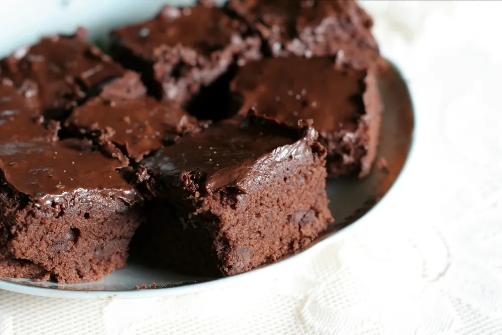

Make Chocolate Brownies

- Let the eggs and butter sit out for 30 minutes to bring to room temperature
- Preheat oven to 325 f
- In a small bowl sift in the flour with the baking soda and the set aside
- In a small saucepan combine butter, sugar, and water. Bring just to a boil the remove from heat
- Add 1/2 of the chocolate chips (6 oz) and vinilla. Stir until smooth and shiny
- Transfer the chocolate mixture into a large bowl
- Add eggs one at a time beating well after each addition
- Stir in remaining chocolate chips an nuts if desired
- Bake at 325 f for 30-35 minutes